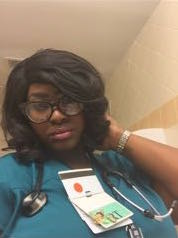

Bio
Thank you for tunning into the bio of Aline-Virtue Jean, the future CEO and Founder of Va'toure magazine.
While reading this catalog one will be apart of the journey of Ms. Jean from her passion of healthcare to taking the leap of faith and persuing her passion for her magazineline and music career.
Overcoming Life's Pain
Born on Februray 25,1991, Aline Virtue Jean was raised as an only child and was considered to be the black sheep of her family.
Being darkskinned and overweight didnt help with the critisim she faced growing up. Hitting her lowest point in life she contemplates over the desicion to end her life once and for all. As she lies in the tub she feels a sweet presence bringing peace to her soul and giving her comfort as well as LOVE.
This unexpalinable experience left her speechless. She began to sobb uncontrollably and cried out to God. His spirit then embraces her and, leds her to read a scripture about the love of God and being fearfully and wonderfully made.
This experience is a personal testimony that she chooses to share, hoping to bring life and encouragement to someone who is battling with depression and hopelessness.
New found Love For Saving Lives
As a child Ms. Jean remebers her premature little brother being in a box with so many tubes on him. Something seemed so sad and unsettling to her 5 year old soul. Suddenly it happened; He was gone. Her little brother was no longer with us.
But the Registed Respiratory Therapist at the hospital were so amazing; full of peace, knowledge, love, and comfort. She knew she had to be a part of the team that not only works hard to save lives, but a team that makes sure they are truly making a difference in their patient's lives.
She succesfully graduates and is prepared to start her journey in the world of medicine.